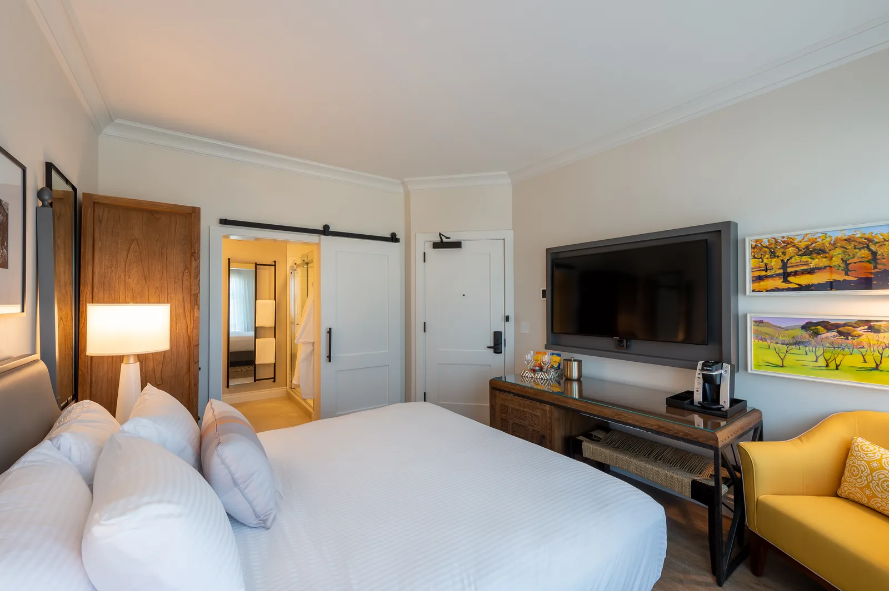
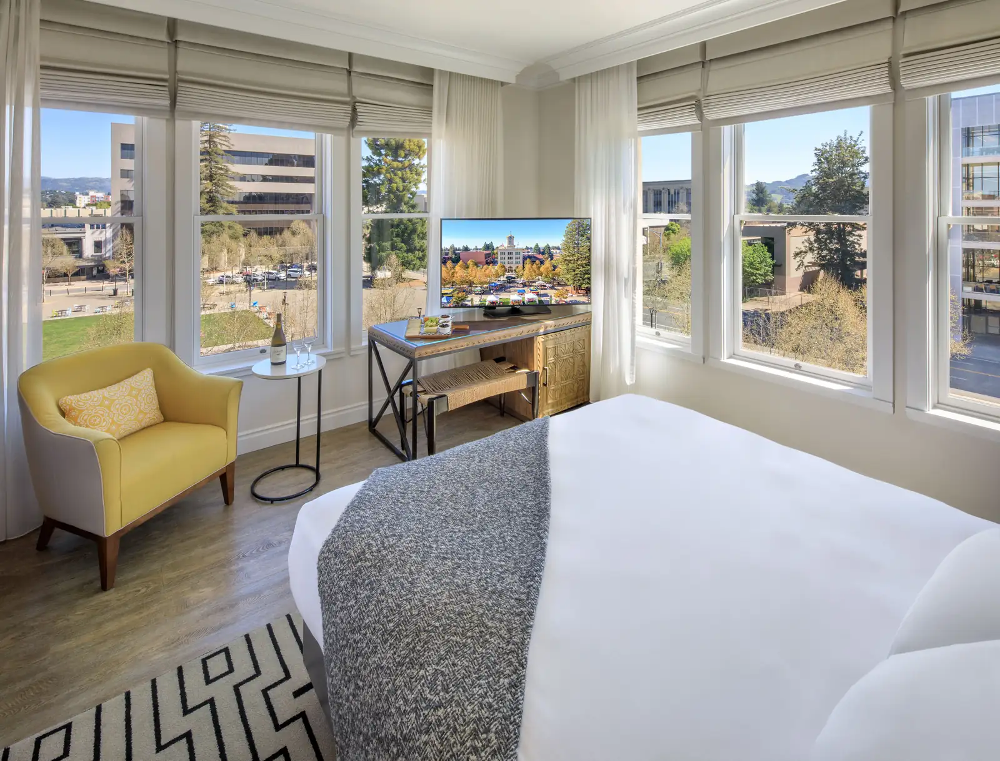

Built in 1906 and anchoring Old Courthouse Square, Hotel E is one of Santa Rosa's most storied addresses, a Beaux-Arts landmark that has welcomed guests through the full arc of Sonoma's history.
The hotel's 39 rooms balance the gravitas of the original architecture (high ceilings, generous moldings, the light that comes only from tall historic windows) with modern amenities that don't apologize for being contemporary. Nothing feels like a museum reproduction, because it isn't one.
The Enology Lounge is the hotel's social anchor, offering an intimate, well-curated wine program that draws on producer relationships throughout Sonoma County. It's the right place to end a day in the vineyards or to begin one before heading out to the appellation.
Valet parking, continental breakfast, and genuine dog-friendly accommodations round out a property that attends to the details without making a performance of it.
39 rooms in a restored 1906 Beaux-Arts building on Old Courthouse Square
Enology Lounge, intimate wine bar with Sonoma County producer pours
Continental breakfast included daily
Valet parking available
Dog-friendly throughout, genuine, not performative
Concierge-arranged winery tastings
Central location within walking distance of downtown dining and culture
An ideal room for every overnight guest. All the modern amenities in a room that doesn't try to be anything other than exactly what it is.

Deluxe King
The perfect getaway starts here. With city views and modern amenities to make each stay comfortable and memorable.

Premium King
Overlooks Old Courthouse Square with the original wrap around windows that define the building's Beaux-Arts character. A proper Santa Rosa morning starts here.
The Enology Lounge
Sonoma in a glass
The Enology Lounge is Hotel E's intimate wine bar, a room-length counter and a thoughtfully curated list of Sonoma County pours, with an emphasis on small-production, and bottles you won't find in retail. The lounge hosts occasional meet the maker events and can arrange direct visits to the producers behind every label on the menu.
Hotel E has 39 thoughtfully appointed rooms across five categories: Deluxe King, Premium King (with views of Old Courthouse Square), Standard King, Deluxe Queen, and ADA-accessible Queen rooms. All feature 100% Supima Cotton linens, Luxury Villa European Down Comforters, blackout curtains, 55" 4K TVs, and eco-friendly bath amenities.
What are the check-in and check-out times?+
Check-in is at 4:00 PM and check-out is at 12:00 PM (noon). Early arrivals and late check-outs are subject to availability. Contact the front desk at (707) 481-3750 for special accommodations. The desk is staffed 24 hours a day.
Is parking available?+
Yes, Hotel E offers secure valet parking for $25 per night. Valet is available daily from 7:00 AM to 11:00 PM. City-operated garages and metered street parking are also available nearby for guests who prefer self-parking.
Is Hotel E pet-friendly?+
Yes! Hotel E welcomes your pup for an additional $50 per stay. Old Courthouse Square is right outside the door and perfect for morning walks.
What does the continental breakfast include?+
Continental breakfast is served daily from 6:30 AM to 10:00 AM and includes fresh fruit, pastries, English muffins, bagels, and more, along with locally sourced, freshly brewed lobby coffee that's available 24/7.
What is the Enology Lounge?+
The Enology Lounge is Hotel E's in-house wine bar featuring a curated selection of award-winning Sonoma County wines by the glass, local craft beers, and light snacks. Happy hour runs daily from 5:00–7:00 PM. Look out for special events on Thursday and Friday evenings.
Is Wi-Fi included?+
Yes, Hotel E offers complimentary high-speed Wi-Fi and wired internet access throughout the property. Surf and browse freely with no hidden fees or charges.
How far is Hotel E from San Francisco?+
Santa Rosa is approximately 55 miles north of San Francisco via US-101, about 90 minutes by car depending on traffic. Charles M. Schulz Sonoma County Airport (STS) offers direct flights from Los Angeles, Las Vegas, and other West Coast cities on Alaska Airlines and Allegiant.
Are meetings and events available at Hotel E?+
Yes, Hotel E offers five versatile indoor and outdoor spaces totaling 1,000 square feet, ideal for business meetings, corporate retreats, rehearsal dinners, wedding gatherings, and small events. Contact the hotel at reservations@hotelesantarosa.com for group inquiries.
How do I make a reservation?+
Book directly at hotelesantarosa.com for the best available rate, no OTA fees and best rate guaranteed. You can also call the hotel anytime at (707) 481-3750. The front desk is open 24 hours, 7 days a week.
Staying at Hotel E on Old Courthouse Square
Hotel E occupies a restored 1906 Beaux-Arts building at 37 Old Courthouse Square, in the
middle of downtown Santa Rosa. Thirty-nine rooms sit above the Enology wine lounge, which
pours Sonoma County wines by the glass and runs a daily early evening happy hour. The
location means the square, the 4th Street restaurant corridor and Railroad Square are all
reachable on foot.
The wider county opens up from here. Russian River Valley tasting rooms are a short drive
west, Sonoma Valley runs southeast toward Kenwood, and Healdsburg sits north. Guests can plan
with the winery and brewery directory, the
restaurant directory and the
attractions directory.